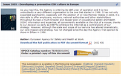
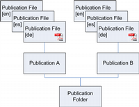

Note: This is a copy of the online documentation. Please check plone.org for an updated version.
If you want to add publications, you need to add a "Publication Folder" first. The Publication Folder is used to represent a section of publications. It provides a special view to display a list of its contained publications together with an image and a language box to quickly download a publication in a specific language. For the content editor it provides a facility to quickly upload several publications using the bulk uploader. Each uploaded folder with pdf files is thereby converted to a publication object.
Inside the folder, you can add "Publication" objects. Each Publication object represents one publication and stores metadata about that publication like Title, Description, Publication date and Author. It provides a detailed view on that publication containing all available metainformation. It also contains a quick upload feature to quickly upload the publication pdf files.

Publication detail view
The PDF Files of a Publication are stored as "Publication File" objects inside the Publication object. Each Publication File represents one language version. As there are some metadata like Title, Description, ISBN or order number specific to the language version of the publication, these are stored on the Publication File object. The user will normally not see the Publication file directly, though.
The Publication object acts as a dispatcher between the user and the Publication File. If the user accesses a publication, it fetches the appropriate publication file based on the users preferred language and displays the metadata of that publication file to the user. If a user accesses the same publication using the same url but a different preferred language, the publication will be displayed in the other language. If some metadata is not available in the requested language, the metadata from the publication object is used as fallback.

The publication object types
First, you need to find out whether you want to have one or multiple sections for your publications. If you don't have many publications, one Publication Folder may be the best solution. If you have reports, magazines, fact sheets, proceedings, etc., your might consider adding one Publication Folder for each of those types.
Now we can add publications to the folder.
There is the manual way
If you want to add more publications to your site, you probably have one or more folders on your desktop containing the PDF files of your publications. In this case you might want to try the semi automatic way.
Semi-automatic way
Now, each folder will be converted to a publication object and the PDF files inside will become Publication files.
If you want the system to autodetect metainformation, click on edit and parse to automatically parse all files. This step will also check the filename for hints to the PDF's language.
If you access a publication folder or object through the web, instead of being presented the whole publication PDF for download, you will first see a short description of the publications metadata as a preview.
PDFs have the possibility of storing metadata. If you have stored metadata on your pdfs, the publication product can try to parse them and set those information automatically on the objects. The following PDF metadata attributes are supported:
You also can manually set the following attribute on a PDF file and it will be recognized:
If you have attributes set on your PDF file, you can tell the system to parse them.
If you don't have metadata set on your pdf file, it can be annoying to click through a lot of edit forms to set metatada manually. Especially if you have many language versions to take care of. In this case it can be helpful to collect all metadata in a single textfile and upload that to the system. You can do that in the upload section of the edit form of the publication object.
The text file consists of one [default] section and several language sections, named by the language abbreviation ([en], [de], ...). Below each section you can specify the attribute names and their values separated by a colon (':'). If an attribute should be stored as list, you can append square brackets to the end of the attribute name ('[]') so that the system knows that it should parse the value as a list, where the values are separated by commas (',').
Example for a metadata text file:
# metadata.ini
# This is a template to upload attributes for a publication with all currently supported attributes
# Dated: 1.5.2007
################################################################################
# The default section is set on the Publication object
################################################################################
[default]
# Object specific attributes
title: Memorandum of Understanding
publication_date: 2000/03/15
description: Memorandum of Understanding between the European Agency for Safety and Health at Work and the European Foundation for the Improvement of Living and Working Conditions.
forsale: 0
author: European Agency for Safety and Health at Work
# OSHA Specific Metadata
CAS[]: freetext, freetext, freetext
keywords[]: accident_prevention, agriculture, businessOSH, cww, construction, dangerous_substances, disabled_people, education, fisheries, gender, health_care, legislation, msd, noise, research, statistics, stress, young_people, OSHmail
MTSubject[]: /0000A/0000B/, /0000A/0000C
Country[]: /EU, /MS/ES
NACE[]: 00, 01, 02, 03, 04
# Risk observatory specific tags
Target_user_groups[]: /20043807133800_19925/20043807133800_39015, /20043807133800_72756/20043807133800_72841
topic[]: hearingloss, noiseexposure
country[]: at, be, cz
html_meta_keywords[]: OSHA, occupational safety, occupational health, OSH, european agency, safe start, stress, noiseexposure
################################################################################
# The Language section is set on the Publication file object for that language
################################################################################
[en]
# Object specific attributes
title: Memorandum of Understanding
description: Memorandum of Understanding between the European Agency for Safety and Health at Work and the European Foundation for the Improvement of Living and Working Conditions.
order_id: TEAB06001ENC
ISBN_number: 87-418-5901-5
# Dublin Core Metadata
# ... as above
# OSHA Specific Metadata
# ... as above
# Risk observatory specific tags
# ... as above
[bg]
# ...
Make sure to safe that file in utf-8 format without a Unicode-BOM if you are working with languages.
There are several methods to translate the metadata, all depending on how your process of adding the publication is organised.